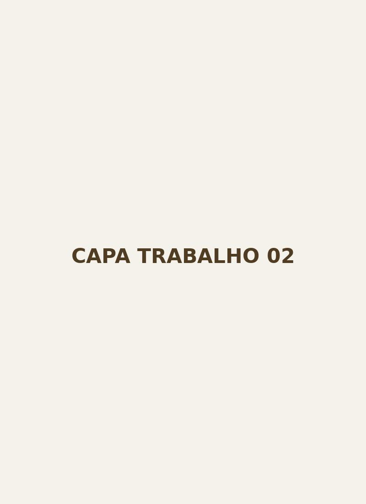
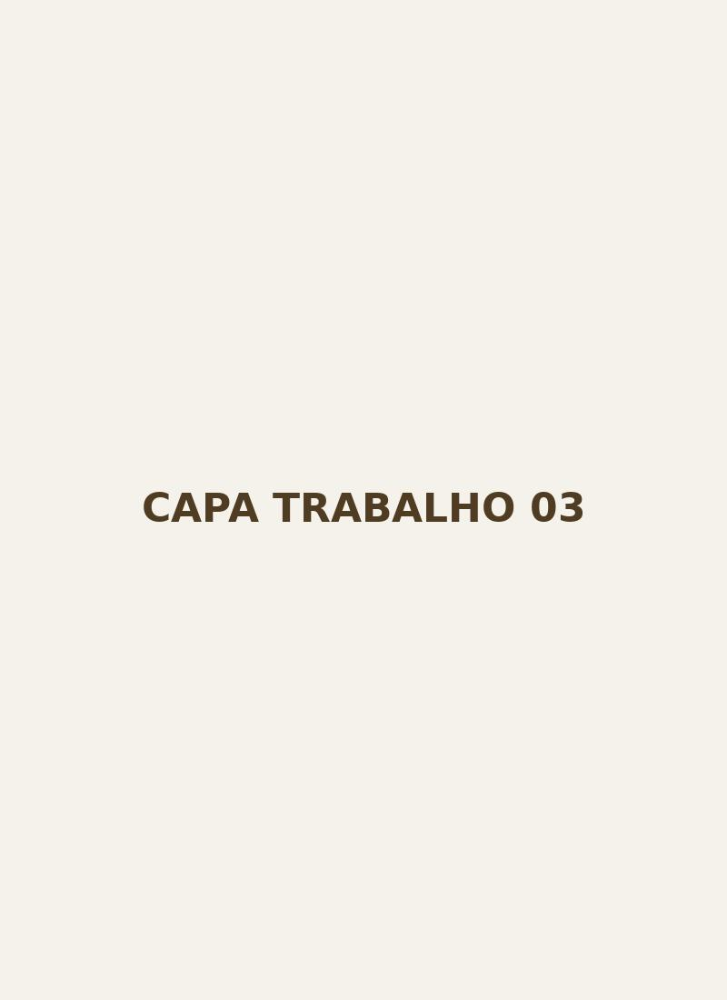

PDF
PDFAGRICULTURA PDF
PDF
Tema: Cadeia de Valor dos Produtos Agrários
PDFSOCIOLOGIA PDF
PDF
Tema: Usos Abitos e Costumes de Habitantes da Sociedade Zambeziana
PDFPORTUGUES PDF
PDF
Tema: História da língua portuguesa em Moçambique
PDFPORTUGUES
Tema: Perspectivas e reflexões sobre os métodos, abordagens e o pós-método

WORDECONOMIA
Desenvolvimento Económico
Trabalho sobre crescimento económico e políticas públicas.

RARADMINISTRAÇÃO
Gestão de Instituições
Estudo dos princípios de gestão e desafios institucionais.
Nenhum trabalho encontrado
Experimente outro termo ou filtro.